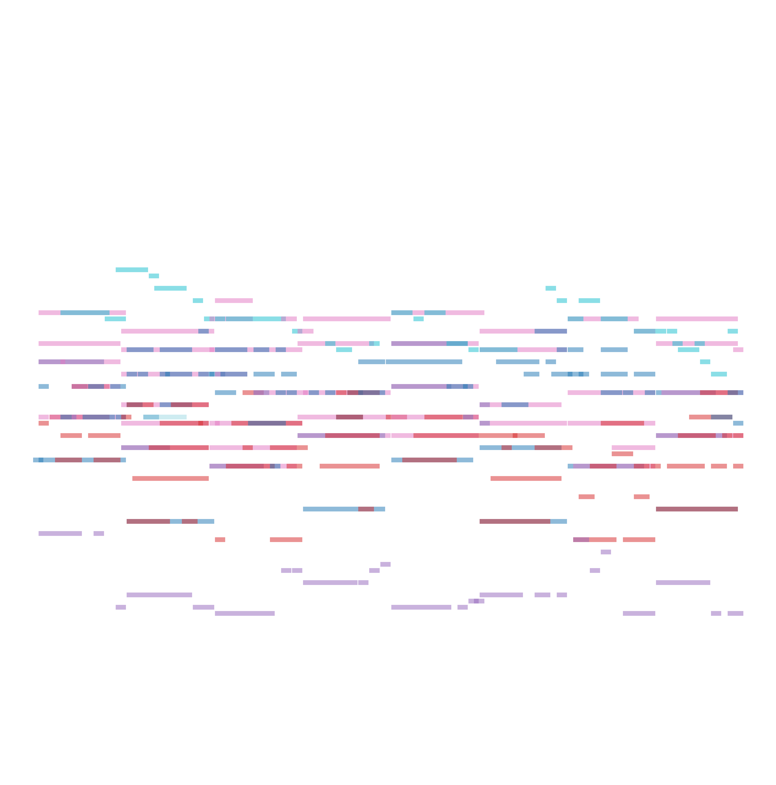

ViTex (Instrumentation)

1 / 3
+
Chord Progression
1 / 3
We propose ViTex: a representation that can (1) intuitively visualize track-wise, texture-level instrumentation ideas, and (2) serve as a conditioning signal to guide music generation. We further train a discrete diffusion model that takes ViTex and chord progression as inputs to generate multi-track symbolic music. Our model focuses on 4/4 time signature and 8-bar pieces. This demo page showcases our model's outputs under different generation settings, organized as follows:
Below is a demo — click the left and right arrows to browse different ViTex and chord progressions. The displayed ViTex and chord progression are used as the model's inputs, with both control scales fixed at $\lambda_{\text{ins}} = \lambda_{\text{chd}} = 1.0$. The corresponding generated result is shown on the right.
By leveraging diffusion-based inpainting, our model supports music continuation given prompts. On the right is an example of prompt continuation: we feed the first two bars of the ground-truth piece, along with their corresponding ViTex and chord progression with control scale $\lambda_{\text{ins}} = \lambda_{\text{chd}} = 1.0$, into the model to generate the following six bars. We also compare our results with those produced by the Anticipatory Music Transformer (AMT).


Both the ViTex and chord progression conditions are trained using classifier-free guidance. We can independently adjust their control strengths, denoted as $\lambda_{\text{ins}}$ and $\lambda_{\text{chd}}$. For simplicity, we fix the ViTex and chord progression as follows:

We then vary the values of $\lambda_{\text{ins}}$ and $\lambda_{\text{chd}}$. The table below shows the model’s generated outputs under different control strengths. From left to right, as the chord control increases, the generated music increasingly aligns with the given chord progression (F, G, Em, Am, F, G, Em, Am). From top to bottom, the model’s instrumentation gradually shifts from random to conforming to the specified ViTex control.
| $\lambda_{\text{chd}} = 0.0$ | $\lambda_{\text{chd}} = 0.2$ | $\lambda_{\text{chd}} = 0.5$ | $\lambda_{\text{chd}} = 0.7$ | |
|---|---|---|---|---|
| $\lambda_{\text{ins}} = 0.0$ |  | |||
| $\lambda_{\text{ins}} = 0.3$ | ||||
| $\lambda_{\text{ins}} = 1.2$ |
Below, we present additional samples of unconditional generation results, where both control strengths are set to zero (i.e., $\lambda_{\text{ins}} = \lambda_{\text{chd}} = 0.0$).